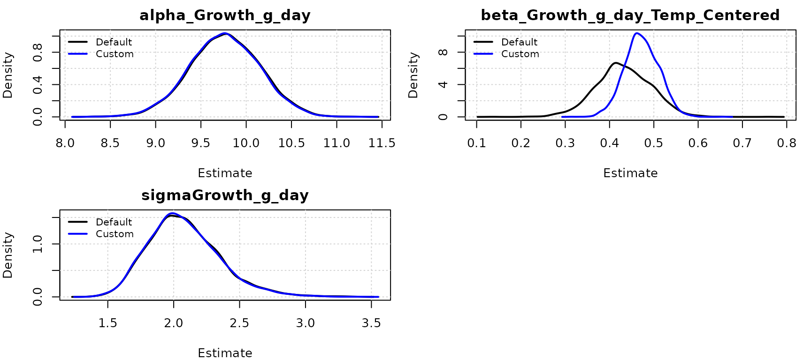
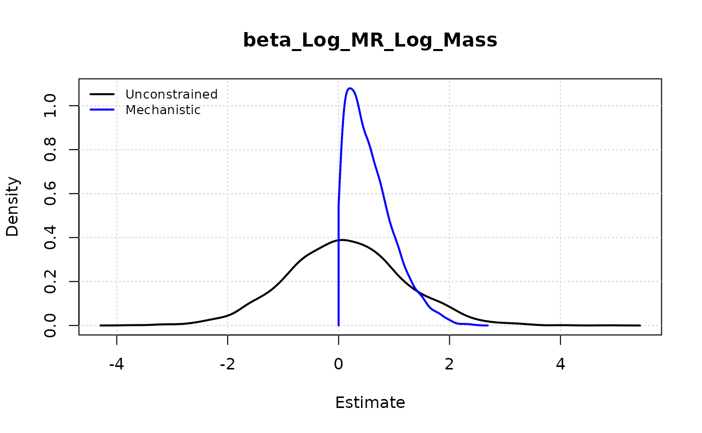
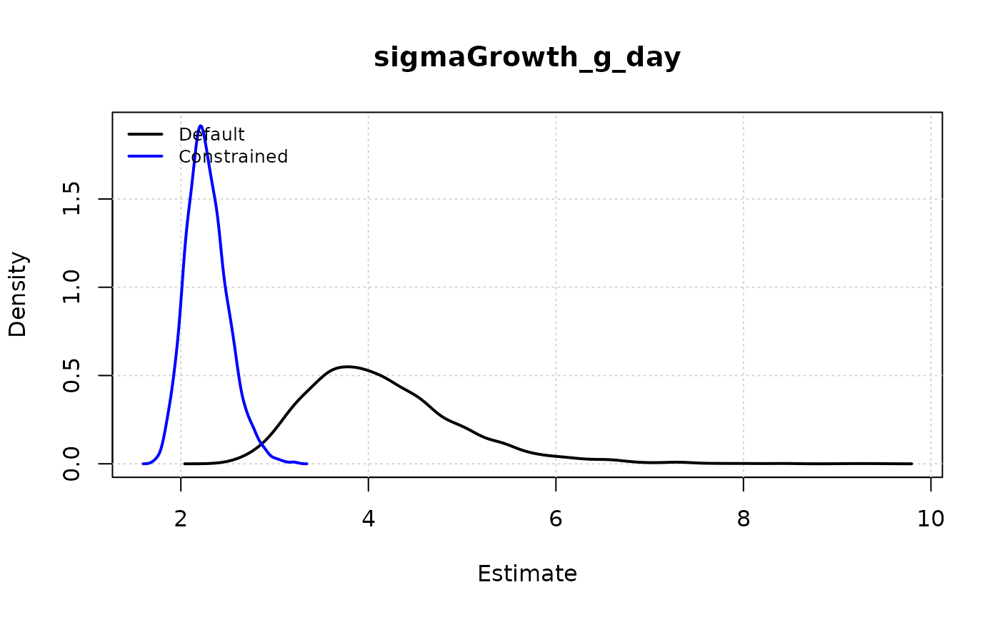

Custom Priors and Mechanistic Constraints
Source:vignettes/05_custom_priors.Rmd
05_custom_priors.RmdIntroduction
One of the strengths of Bayesian modeling is the ability to
incorporate prior knowledge into your analysis. In the
because package, we generally use “uninformative” or weakly
informative priors by default to let the data speak for itself. However,
there are many cases where you might want to inject specific
information:
- Mechanistic Knowledge: You know a parameter (like a growth rate) must be positive or lies within a biologically feasible range.
- Previous Studies: You have estimates from a previous meta-analysis or experiment that you want to use as a starting point.
- Measurement Error: You know the measurement error of an instrument and want to fix or constrain the residual variance.
This vignette demonstrates how to use the priors
argument in because() to override default priors and inject
your own mechanistic constraints.
Example 1: Comparing Default and Custom Priors
For this example, let’s simulate Absolute Growth Rate in grams per day (g/day) for hypothetical juvenile birds responding to ambient temperature.
library(because)
set.seed(42)
N <- 30
# Ambient temperature in Celsius (Mean 20C)
Temp_Raw <- rnorm(N, mean = 20, sd = 5)
# Center it so '0' represents the mean (20C).
# This ensures the intercept represents growth at average conditions,
# rather than at 0°C (where the bird would be frozen solid!).
Temp_Centered <- Temp_Raw - 20
# True relationship:
# Baseline growth at mean temp is 10 g/day.
# Every degree of warming above mean adds 0.5 g/day.
Growth_g_day <- 0.5 * Temp_Centered + 10 + rnorm(N, sd = 2)
df <- data.frame(Temp_Centered, Growth_g_day)Default Model
Let’s fit a standard model first. By default, because
assigns wide Gaussian priors (dnorm(0, 1.0E-6)) to
intercepts (alpha) and slopes (beta), and
Gamma priors (dgamma(1, 1)) to precisions
(tau).
fit_default <- because(
equations = list(Growth_g_day ~ Temp_Centered),
data = df
)
#> No tree provided. Running standard (non-phylogenetic) SEM.
#> Converted data.frame to list with 2 variables: Growth_g_day, Temp_Centered
#> Compiling model graph
#> Resolving undeclared variables
#> Allocating nodes
#> Graph information:
#> Observed stochastic nodes: 30
#> Unobserved stochastic nodes: 3
#> Total graph size: 1059
#>
#> Initializing model
summary(fit_default)
#> Mean SD Naive SE Time-series SE 2.5% 50%
#> alphaGrowth_g_day 9.779 0.388 0.007 0.007 9.006 9.784
#> beta_Growth_g_day_Temp_Centered 0.432 0.063 0.001 0.001 0.312 0.432
#> sigmaGrowth_g_day 2.085 0.278 0.005 0.005 1.623 2.060
#> 97.5% Rhat n.eff
#> alphaGrowth_g_day 10.550 1 3114
#> beta_Growth_g_day_Temp_Centered 0.561 1 3000
#> sigmaGrowth_g_day 2.702 1 2957
#>
#> DIC:
#> Mean deviance: 130.4
#> penalty 3.146
#> Penalized deviance: 133.5Custom Prior Model
Now, suppose we have strong prior knowledge from scaling theory or previous literature: 1. Intercept (Alpha): At mean temperatures (20°C), metabolic constraints suggest growth should be around 10 g/day. 2. Slope (Beta): We expect a positive effect of temperature, likely around 0.5 g/day/°C.
The parameter names usually follow this convention:
Intercepts: alphaResponseVariable
(e.g., alphaGrowth_g_day)
Slopes: beta_Response_Predictor (e.g.,
beta_Growth_g_day_Temp_Centered)
Residual precision: tau_e_Response
# Define our custom priors
my_priors <- list(
# Strong prior on intercept: Mean 10, Precision 100 (SD = 0.1)
alphaGrowth_g_day = "dnorm(10, 100)",
# Informative prior on slope: Mean 0.5, Precision 400 (SD = 0.05)
beta_Growth_g_day_Temp_Centered = "dnorm(0.5, 400)"
)
fit_custom <- because(
equations = list(Growth_g_day ~ Temp_Centered),
data = df,
priors = my_priors
)
#> No tree provided. Running standard (non-phylogenetic) SEM.
#> Converted data.frame to list with 2 variables: Growth_g_day, Temp_Centered
#> Compiling model graph
#> Resolving undeclared variables
#> Allocating nodes
#> Graph information:
#> Observed stochastic nodes: 30
#> Unobserved stochastic nodes: 3
#> Total graph size: 1061
#>
#> Initializing model
summary(fit_custom)
#> Mean SD Naive SE Time-series SE 2.5% 50%
#> alphaGrowth_g_day 9.980 0.095 0.002 0.002 9.799 9.978
#> beta_Growth_g_day_Temp_Centered 0.471 0.038 0.001 0.001 0.398 0.470
#> sigmaGrowth_g_day 2.065 0.274 0.005 0.005 1.610 2.040
#> 97.5% Rhat n.eff
#> alphaGrowth_g_day 10.166 1 2902
#> beta_Growth_g_day_Temp_Centered 0.547 1 3000
#> sigmaGrowth_g_day 2.678 1 3096
#>
#> DIC:
#> Mean deviance: 129.6
#> penalty 1.508
#> Penalized deviance: 131.1Notice how the credible intervals for the custom model will be tighter and centered closer to our priors, especially if the data were sparse (small N).
Visualizing the Impact
We can plot the posterior estimates together to see the “shrinkage” effect of our informative priors.
# We can use the helper function plot_posterior() to compare models.
# By passing a list of models, they are overlaid on the same plot.
# The 'parameter' argument uses partial matching (regex), so "Growth_g_day"
# will match both the intercept (alphaGrowth_g_day) and the slope (beta_Growth_g_day...).
plot_posterior(
model = list("Default" = fit_default, "Custom" = fit_custom),
parameter = "Growth_g_day"
)
Example 2: Mechanistic Constraints
In many biological contexts, a negative effect is not just unlikely, it is physically impossible.
For example, consider the relationship between Body Mass and Metabolic Rate (Kleiber’s Law). A larger animal simply cannot consume less energy than a smaller one (a negative slope), all else equal. The physics of life requires costs to scale positively with mass.
However, if our sample size is small and measurement error is huge, we might accidentally estimate a negative slope. We can prevent this by enforcing a positive prior.
# Simulate data following Kleiber's Law: MR = a * Mass^0.75
# Taking logs: log(MR) = log(a) + 0.75 * log(Mass)
set.seed(42)
Mass <- runif(30, 10, 100)
# True scaling exponent is 0.75
# We add enough noise that the estimated slope might be negative by chance
Log_Mass <- log(Mass)
Log_MR <- 1.5 + 0.75 * Log_Mass + rnorm(30, sd = 2.5)
df_kleiber <- data.frame(Log_Mass, Log_MR)
# Prior: The scaling exponent (slope) must be positive
# Physics dictates that metabolic cost increases with mass.
positive_prior <- list(
beta_Log_MR_Log_Mass = "dnorm(0, 1) T(0, )"
)
# 1. Fit Default Model (Unconstrained) - Log-Log regression
fit_default_kleiber <- because(
equations = list(Log_MR ~ Log_Mass),
data = df_kleiber
)
#> No tree provided. Running standard (non-phylogenetic) SEM.
#> Converted data.frame to list with 2 variables: Log_MR, Log_Mass
#> Compiling model graph
#> Resolving undeclared variables
#> Allocating nodes
#> Graph information:
#> Observed stochastic nodes: 30
#> Unobserved stochastic nodes: 3
#> Total graph size: 1059
#>
#> Initializing model
# 2. Fit Mechanistic Model (Constrained)
fit_mech_kleiber <- because(
equations = list(Log_MR ~ Log_Mass),
data = df_kleiber,
priors = positive_prior
)
#> No tree provided. Running standard (non-phylogenetic) SEM.
#> Converted data.frame to list with 2 variables: Log_MR, Log_Mass
#> Compiling model graph
#> Resolving undeclared variables
#> Allocating nodes
#> Graph information:
#> Observed stochastic nodes: 30
#> Unobserved stochastic nodes: 3
#> Total graph size: 1059
#>
#> Initializing model
# Compare Estimates
summary(fit_default_kleiber)
#> Mean SD Naive SE Time-series SE 2.5% 50% 97.5%
#> alphaLog_MR 3.682 4.525 0.083 0.310 -5.423 3.668 12.168
#> beta_Log_MR_Log_Mass -0.001 1.106 0.020 0.076 -2.138 0.009 2.219
#> sigmaLog_MR 2.953 0.394 0.007 0.008 2.283 2.914 3.895
#> Rhat n.eff
#> alphaLog_MR 1.001 220
#> beta_Log_MR_Log_Mass 1.001 220
#> sigmaLog_MR 1.000 2712
#>
#> DIC:
#> Mean deviance: 151.1
#> penalty 3.152
#> Penalized deviance: 154.2
summary(fit_mech_kleiber)
#> Mean SD Naive SE Time-series SE 2.5% 50% 97.5%
#> alphaLog_MR 1.432 1.792 0.033 0.056 -2.759 1.719 3.953
#> beta_Log_MR_Log_Mass 0.555 0.425 0.008 0.013 0.026 0.476 1.577
#> sigmaLog_MR 2.910 0.383 0.007 0.007 2.263 2.883 3.728
#> Rhat n.eff
#> alphaLog_MR 1.000 1039
#> beta_Log_MR_Log_Mass 1.000 1022
#> sigmaLog_MR 1.001 3000
#>
#> DIC:
#> Mean deviance: 150.5
#> penalty 2.252
#> Penalized deviance: 152.8
# Visualize: Unconstrained vs. Truncated
plot_posterior(
list(Unconstrained = fit_default_kleiber, Mechanistic = fit_mech_kleiber),
parameter = "beta_Log_MR_Log_Mass",
density_args = list(Mechanistic = list(from = 0))
)
Example 3: Informing Residual Variance components
We usually estimate the residual variance (sigma or its
inverse tau) from the data. However, you might have prior
knowledge about the expected noise level.
[!NOTE] Distinction from
variabilityargument: Thevariabilityargument inbecause()is designed for Measurement Error in predictors (Error-in-Variables) or when you have repeated measures per individual.Custom priors on
tau_e, shown below, are for providing information about the Residual Variance of the response variable (which includes both Process Error and unrecognized Observation Error).
For example, if you know the precision of your scale is roughly 2 g, this gives you a strong expectation for the residual standard deviation (sigma).
# Simulate small, noisy dataset
set.seed(42)
N_small <- 15
Temp_Small <- rnorm(N_small, 20, 5)
# Actual residual SD = 3 (quite noisy)
Growth_Small <- 0.5 * Temp_Small + rnorm(N_small, sd = 3)
df_small <- data.frame(Growth_g_day = Growth_Small, Temp_Centered = Temp_Small - 20)
# 1. Default Model (Weak Prior)
# The data (SD=3) will dominate, finding a sigma around 3 with wide uncertainty.
fit_default_var <- because(
equations = list(Growth_g_day ~ Temp_Centered),
data = df_small,
quiet = TRUE
)
# 2. Constrained Model (Strong Prior)
# Suppose we have theoretical reasons to believe residual SD should be small (~1.0).
# Precision = 1/1^2 = 1.
# dgamma(20, 20) -> Mean 1, Variance 0.05 (Strong)
variance_prior <- list(
tau_e_Growth_g_day = "dgamma(20, 20)"
)
fit_constrained_var <- because(
equations = list(Growth_g_day ~ Temp_Centered),
data = df_small,
priors = variance_prior,
quiet = TRUE
)
# Visualize: The constrained posterior will be shifted left (towards 1) and sharper
plot_posterior(
list(Default = fit_default_var, Constrained = fit_constrained_var),
parameter = "sigma"
)
Default Priors Reference
It is important to know what you are overriding. because
aims to use weakly informative defaults that provide
minimal regularization while allowing the data to dominate the
posterior.
| Parameter Type | Parameter Name | Default Prior | Description |
|---|---|---|---|
| Intercepts | alpha_* |
dnorm(0, 1.0E-6) |
Wide Normal (Precision 1e-6 = Variance 1,000,000) |
| Coefficients | beta_* |
dnorm(0, 1.0E-6) |
Wide Normal |
| Precision | tau_* |
dgamma(1, 1) |
Gamma(1,1). Weakly informative for precision/variance components. |
| Phylo Signal | lambda_* |
dunif(0, 1) |
Uniform on [0,1] |
| Zero-Inflation | psi_* |
dbeta(1, 1) |
Beta(1,1) (Uniform on [0,1]) |
| Ordinal Cutpoints | cutpoint_* |
dnorm(0, 1e-6) |
First cutpoint fixed, others relative or specifically ordered |
| NegBinomial Size | r_* |
dgamma(0.01, 0.01) |
Wide Gamma for dispersion parameter |
Precision vs Variance: JAGS uses precision . A prior of
dnorm(0, 1.0E-6)means a normal distribution with mean 0 and precision , which corresponds to a variance of (SD = 1000). This is very flat.
Parameter Names Reference
To use custom priors, you need to know the exact internal name of the parameter in the JAGS code.
Common patterns:
-
alpha_{Response}: Intercept -
beta_{Response}_{Predictor}: Regression coefficient -
tau_e_{Response}: Residual precision -
sigma_{Response}: Residual standard deviation (derived, usually not set directly as prior, settauinstead) -
lambda_{Response}: Phylogenetic signal (0-1) -
psi_{Response}: Zero-inflation probability
If you are unsure, run a quick model with
n.adapt=0, n.iter=0 (just compilation) and check the
generated model code:
fit_check <- because(
equations = list(Growth_g_day ~ Temp_Centered),
data = df,
n.iter = 0, quiet = TRUE
)
# Print the JAGS model
fit_check$model
#> JAGS model:
#>
#> model {
#> # Dummy usage of ID to prevent warnings for unused data
#> dummy_ID <- ID[1,1]
#> # Structural equations
#> for (i in 1:N) {
#>
#> muGrowth_g_day[i] <- alphaGrowth_g_day + beta_Growth_g_day_Temp_Centered*Temp_Centered[i]
#> }
#> # Multivariate normal likelihoods
#> for (i in 1:N) {
#> Growth_g_day[i] ~ dnorm(muGrowth_g_day[i], tau_e_Growth_g_day)
#> log_lik_Growth_g_day[i] <- logdensity.norm(Growth_g_day[i], muGrowth_g_day[i], tau_e_Growth_g_day)
#> }
#> # Priors for structural parameters
#> alphaGrowth_g_day ~ dnorm(0, 1.0E-6)
#> tau_e_Growth_g_day ~ dgamma(1, 1)
#> sigmaGrowth_g_day <- 1/sqrt(tau_e_Growth_g_day)
#> beta_Growth_g_day_Temp_Centered ~ dnorm(0, 1.0E-6)
#> }
#> Fully observed variables:
#> Growth_g_day ID N Temp_Centered dummy_ID```